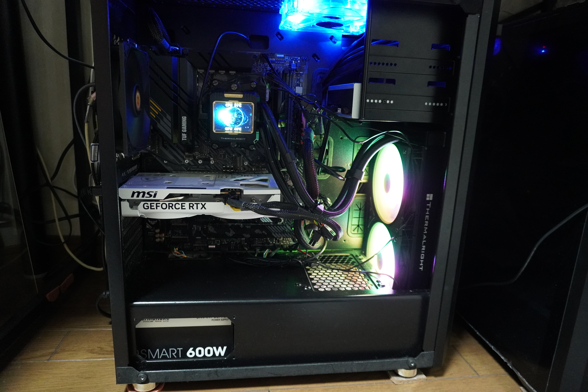
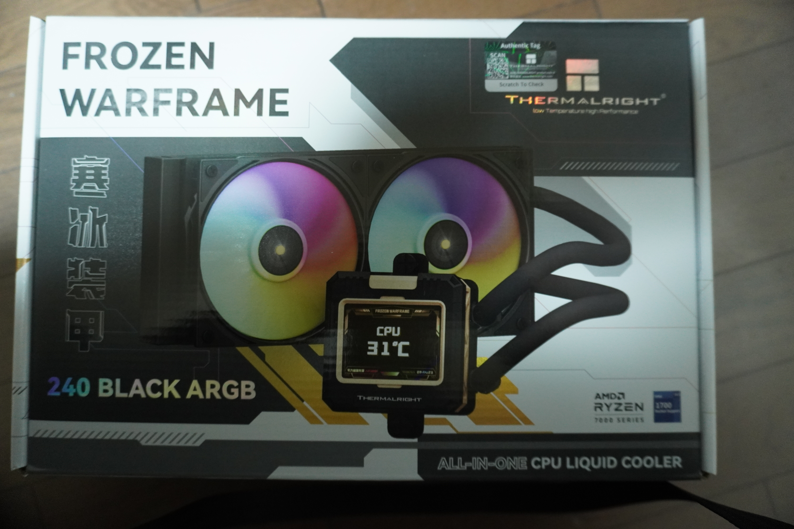
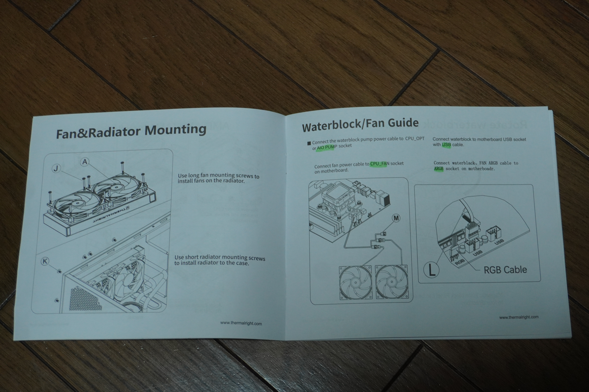
パスキー認証、少しずつ必須になってきたので気になり、PCのセキュリティシステムに踏み込んでしまい、
その沼から抜けれません。偉い人がウイルス対策で色々考案したのか、複雑すぎて良く分かりません。
現代の CPU の中には “2つのプロセッサ” が存在し,一つはセキュリティ専用で、それ用にROM,NVRAMがあるとは驚き！！
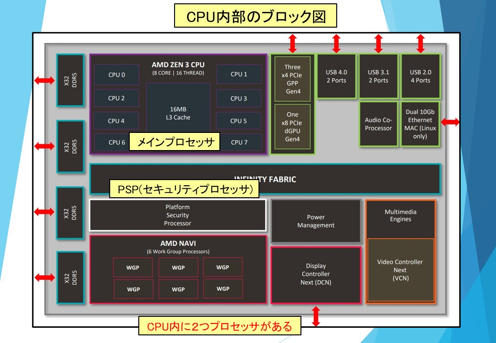
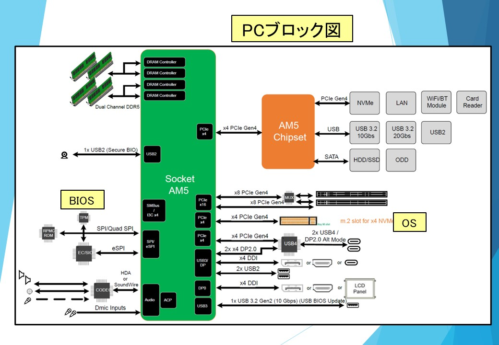
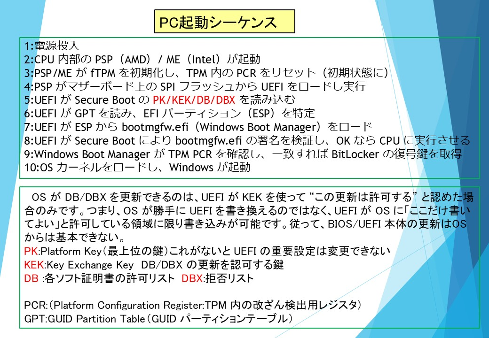
ウイルスが「偽の証明書」を登録しようとした場合： もしウイルスがマザーボード内の信頼済みリスト（DB）に
自身の署名用証明書を無理やり登録し、 それを使って改ざんしたブートコンポーネントを
認証させたなら、PCはウイルスを「正規のプログラム」と誤認して起動してしまいます。

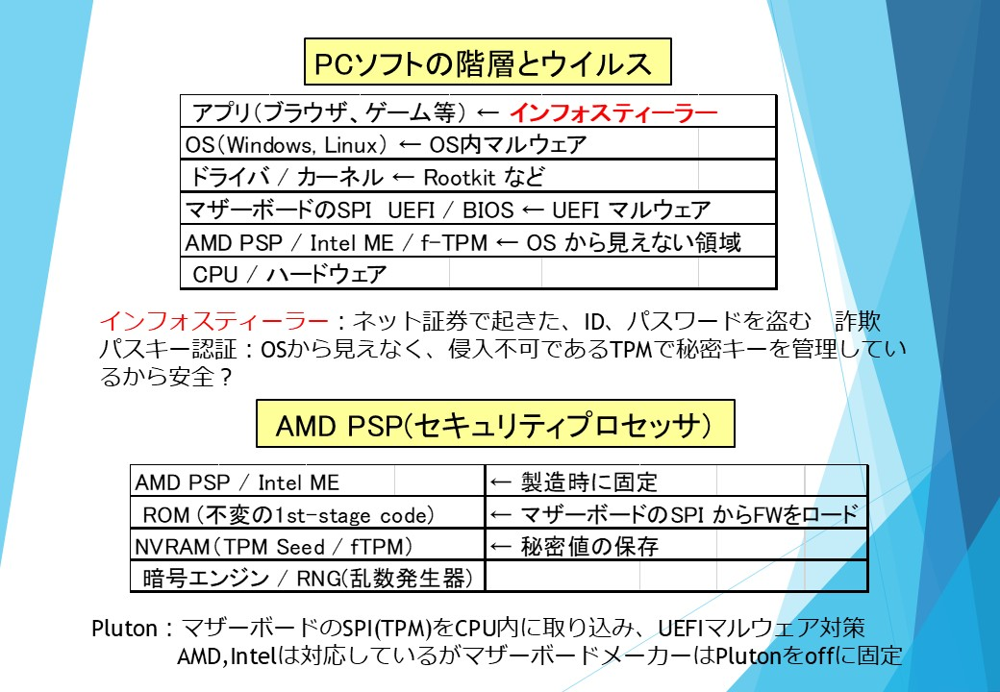
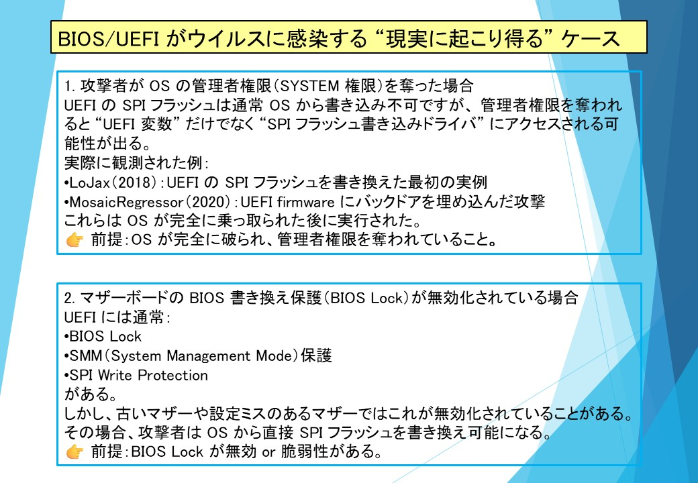
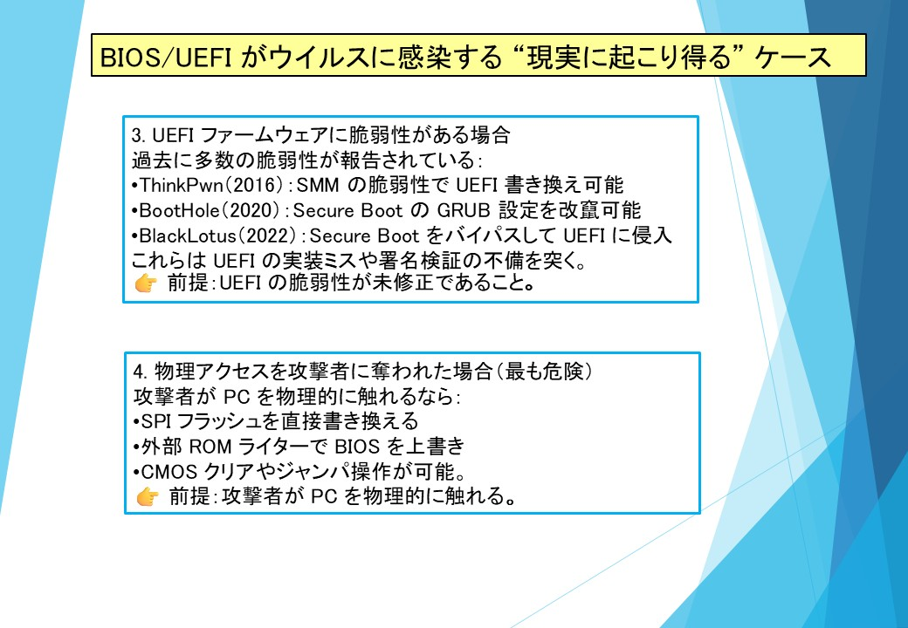
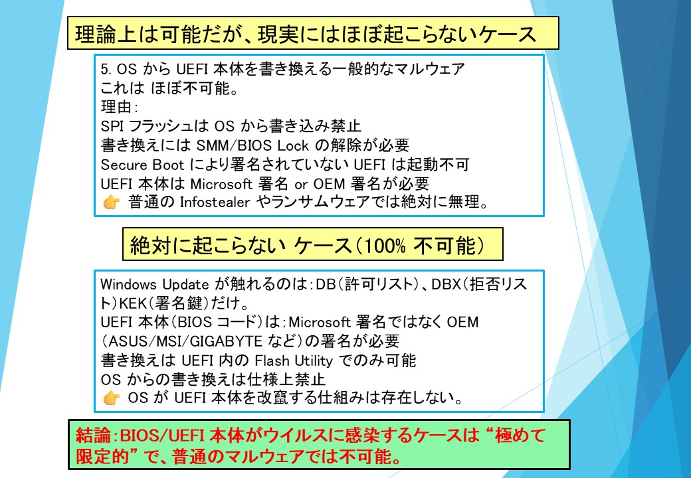
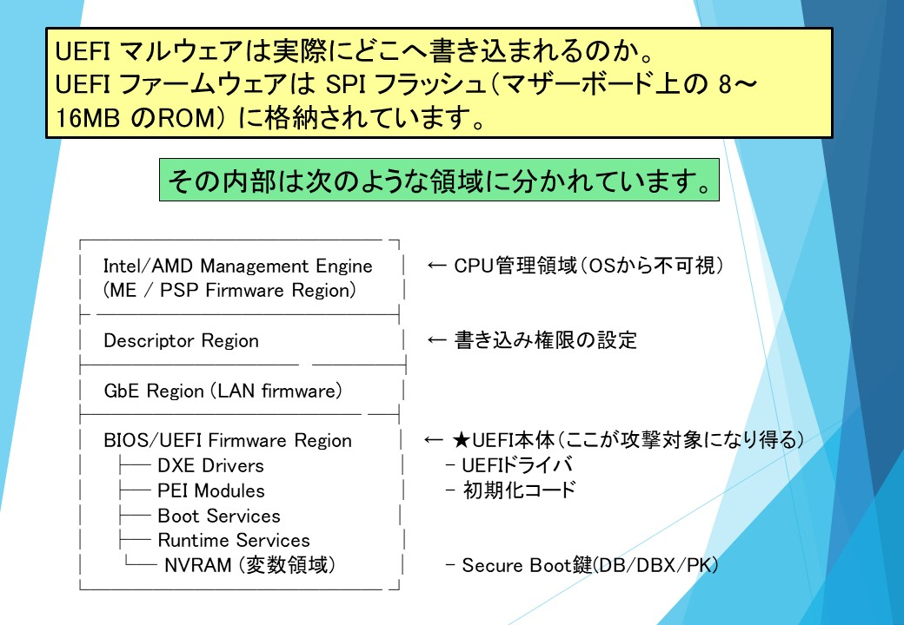